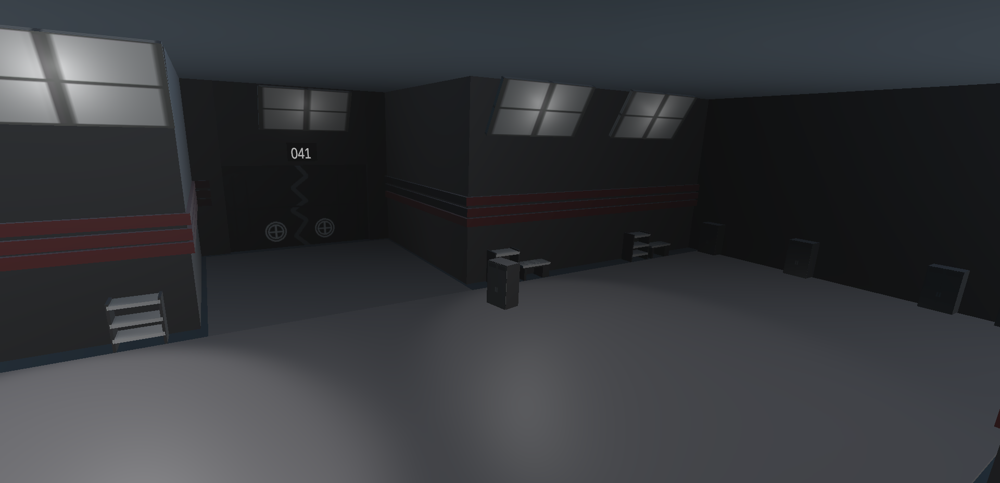
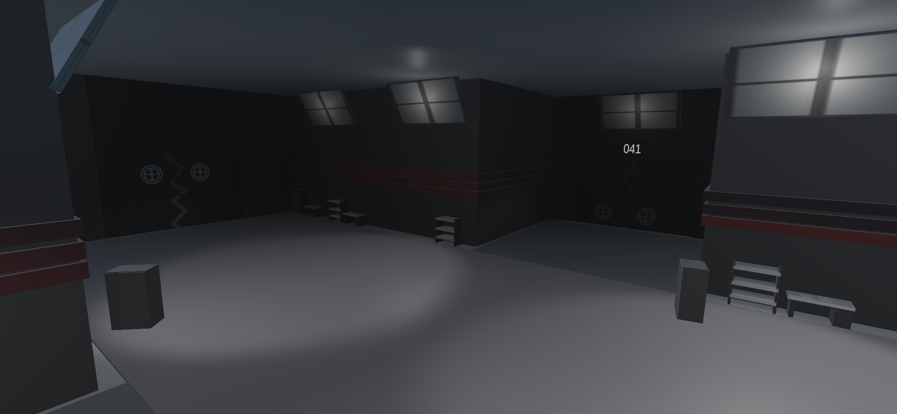
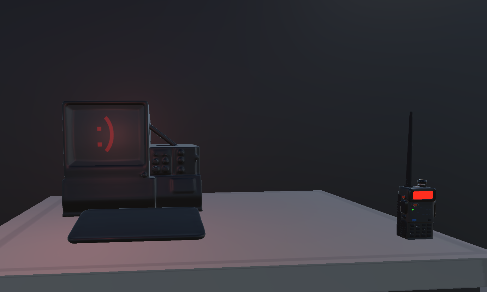

September Floodgate Progress Update
9/12/26

September has been a pretty damn good month for Floodgate so far. The biggest news is also probably the easiest way to explain where development is at right now: We're Halfway Through the Rooms!!! Yep. Halfway. Floodgate is planned to have around 100 rooms, and I've officially crossed the halfway point. That's really weird to say. For a long time Floodgate existed as a bunch of ideas, mechanics, documents, music, random Unity scenes, and me going “yeah this'll totally be a game eventually.” And now I can actually open the project, start walking, and just... keep going. There is a game here. There are still a LOT of rooms left to make, obviously. Halfway done means the other half still exists and is currently staring at me threateningly. But 50% is 50%. I'll take it. Development Has Been Going Surprisingly Smoothly I feel like every time I write one of these posts I'm supposed to reveal that Unity exploded or my computer caught fire. But... Not really. Development has actually been going pretty smoothly. I've gotten into a much better rhythm with making rooms. I know what Floodgate is supposed to look like now, I know how I want areas to flow into each other, and I'm generally spending less time staring at an empty Unity scene wondering what I'm supposed to put there. That's not to say everything magically works. It is still Unity. Things break. Things work for absolutely no reason. Things stop working for absolutely no reason. Sometimes I spend way too long fixing something stupid. You know. Game development. But overall? Progress has been pretty consistent. And after spending so long worrying about whether I'd actually finish this game, it's really nice being able to look at it and see the finish line getting slightly less ridiculously far away.Heavy Containment
One of the bigger things I've been working on recently is Heavy Containment. And I really like how this area is turning out.
It's darker, emptier, and generally feels a lot less welcoming than some of the earlier parts of the facility. Which is probably good. I don't think an area called Heavy Containment should have a gift shop lol. I've been experimenting more with larger rooms, lighting, storage areas, long stretches of darkness, and making the facility itself feel a little more intimidating. I'm also getting better at decorating rooms without needing to throw seventeen random objects into every corner. Sometimes an empty room is creepy because it's empty. Sometimes it's empty because I got lazy. You will never know which one it is.CHIP IS REAL!!!

Chip exists now. Like... Actually. He's not just dialogue I wrote somewhere anymore. He's a little computer sitting on a table. I've also been working on his radio, which means after finding him you'll be able to take a little piece of Chip with you through the facility and hear dialogue from him while you're exploring. He's been a character I've had planned for a while, so actually seeing him sitting there inside Floodgate is extremely weird. He doesn't really do much. He's a computer. What did you expect? But he's here. CHIP IS REAL. Now I Have to Put Things in the Rooms Making rooms is only part of making Floodgate right now. Unfortunately. I checked. So I'm also starting to go back through some of the older areas and work more on the actual entities and encounters that are supposed to happen inside them. This is something I specifically don't want to leave entirely until the end. Because I know exactly what would happen. I'd finish Room 100, celebrate for approximately twelve seconds, and then realize: Oh cool. Now I have to put the video game inside the video game. So I'm going to be jumping between room development and entity work for a bit. It should also help keep development from becoming ROOM. ROOM. ROOM. ROOM. ROOM. ROOM. ROOM. for several weeks straight. Which is probably good for my brain. Floodgate Feels Like Floodgate Now I think that's probably the biggest difference between where the project was a few months ago and where it is now. I'm not really trying to figure out what Floodgate is anymore. I know what it is. The visual style exists. The gameplay exists. The characters exist. The facility exists. The different areas are starting to connect together into one actual place instead of feeling like disconnected rooms. Now I have to... make the rest of it. .... .......... So no, Floodgate isn't almost finished. But it is halfway through one of the biggest parts of development. And that's pretty cool. What's Next? For now, I'm going to keep doing what I've been doing. More rooms. I'm not going to give myself some ridiculous deadline and then explode trying to meet it. Development is moving smoothly right now, and I'd rather keep that momentum than turn this into a race. Floodgate will be done when it's done. But for the first time, the end doesn't feel like some imaginary point infinitely far away. We're getting there. And when we finally get there... Well. I'm not planning on just quietly uploading the game one afternoon and going, "hey floodgate is out lol" I've got something in mind. I'm not going to say what it is yet. I'm not even going to say when you'll see it. But when Floodgate is ready... you'll know. :) See ya. ← Back to Blog